A qualidade da captura com a facilidade da modelagemCapture quality with the ease of modeling
Um plugin de guitarra gratuito que toca o som real de amplificadores e pedais gravados, e deixa você ajustar o timbre girando os botões, como num equipamento de verdade.
A free guitar plugin that plays the real sound of recorded amps and pedals, and lets you shape your tone by turning the knobs, just like real gear.
VST3, AU, LV2 e programa independenteVST3, AU, LV2 and standalone app
Capturas NAM A2 da TONE3000NAM A2 captures from TONE3000
Gratuito, sem assinaturaFree, no subscription
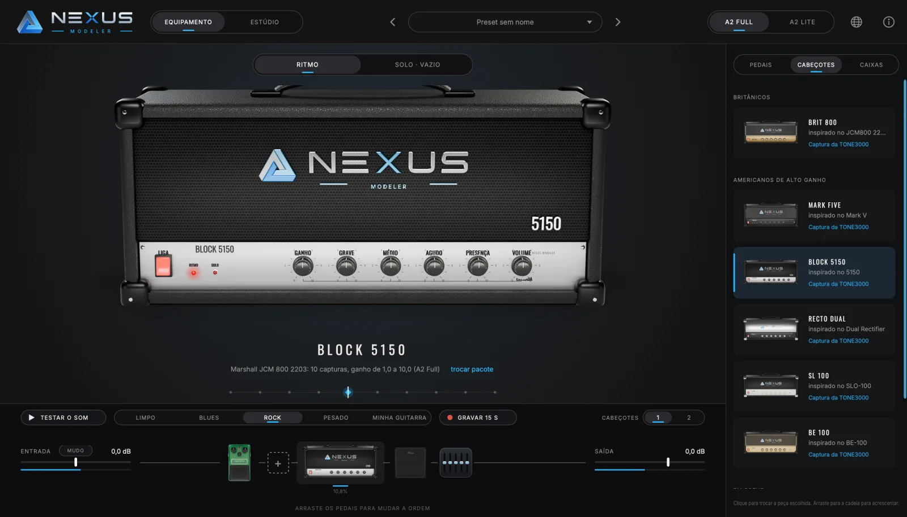
O cabeçote Brit 800 tocando um pacote de 11 capturas, do ganho 0 ao 10.The Brit 800 head playing a pack of 11 captures, from gain 0 to 10.
A premissaThe premise
Até hoje, era preciso escolherUntil now, you had to choose
Existem dois jeitos de ter som de amplificador no computador. Cada um tem uma vantagem que falta no outro. O Nexus junta as duas.
There are two ways to get amp tone on a computer. Each has a strength the other lacks. Nexus brings them together.
Mundo 1World 1
ModelagemModeling
Um programa imita, por cálculo, o circuito do amplificador. Você gira os botões e timbra à vontade.
Software imitates the amp's circuit with math. You turn the knobs and dial in any tone.
Fácil de ajustarEasy to adjust
O som é uma simulaçãoThe sound is a simulation
+
Mundo 2World 2
CapturaCapture
Uma inteligência artificial aprende o som de um equipamento real, gravado num ajuste. É o som de verdade, mas congelado: para mudar, você troca de arquivo.
An AI learns the sound of real gear, recorded at one setting. It's the real thing, but frozen: to change it, you swap files.
Som real do equipamentoThe gear's real sound
Preso a um único ajusteStuck at one setting
=
Nexus Modeler
Os dois juntosBoth at once
O som real das capturas, com os botões funcionando como num amplificador. Você gira, o Nexus cuida do resto por dentro.
The real sound of captures, with knobs that work like a real amp. You turn, Nexus handles the rest behind the scenes.
Som realReal sound
Fácil de ajustarEasy to adjust
Como funcionaHow it works
O botão troca a capturaThe knob swaps the capture
Quem grava um amplificador costuma publicar um pacote com várias capturas: uma com o ganho em 0, outra em 1, em 2, e assim por diante até 10. No Nexus, esse pacote vira um único amplificador.
People who capture an amp often publish a pack with several captures: one with gain at 0, another at 1, at 2, and so on up to 10. In Nexus, that pack becomes a single amp.
Você gira o ganhoDo cabeçote ou do drive do pedal, como faria no equipamento.
You turn the gainOn the amp head or the pedal's drive, as you would on real gear.
A próxima captura “aquece”Ela escuta o som recente da guitarra por um instante, para entrar já no ponto certo.
The next capture “warms up”It listens to the guitar's recent sound for a moment, so it comes in already in step.
A troca leva 30 milésimos de segundoUma passagem suave de uma para a outra, sem clique e sem estalo, mesmo tocando.
The swap takes 30 millisecondsA smooth handover from one to the other, with no click or pop, even while you play.
Sem abrir pasta nenhuma: o Nexus descobre sozinho qual captura é de qual posição pelo nome do arquivo.
No folders to open: Nexus works out which capture belongs to which position from the file name.
012345678910
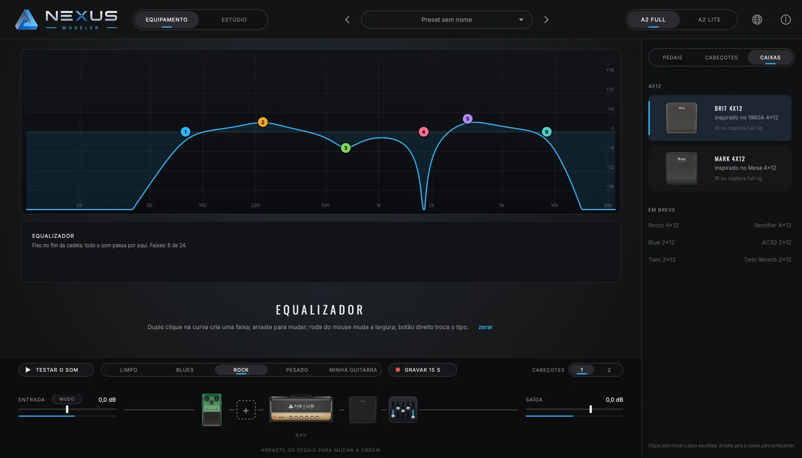
EqualizadorEqualizer
Um equalizador de estúdio no fim da cadeiaA studio equalizer at the end of the chain
Depois do cabeçote e da caixa, todo o som passa por um equalizador de até 24 faixas, no estilo dos equalizadores de estúdio: dê dois cliques na curva para criar uma faixa, arraste para mudar, use a roda do mouse para a largura e o botão direito para trocar o tipo (sino, prateleiras, cortes de 12 a 48 dB por oitava e notch).
After the head and the cabinet, all sound goes through an equalizer of up to 24 bands, in the style of studio equalizers: double-click the curve to add a band, drag to change it, use the mouse wheel for width and right-click to change the type (bell, shelves, 12 to 48 dB per octave cuts and notch).
No painel do cabeçote: grave, médio, agudo e presença iguais em todo amplificador, até ±12 dB; em 5, o som é o da captura.
On the head panel: bass, middle, treble and presence, the same on every amp, up to ±12 dB; at 5 you hear the capture as is.
Salvo no projeto: feche e abra o programa e o equalizador volta do mesmo jeito.
Saved with your project: close and reopen and the equalizer comes back the same.
EquipamentosGear
Inspirados em clássicos, com nome próprioInspired by classics, with names of their own
Cada peça é modelada e renderizada em 3D pelo próprio projeto. Cada botão tem 101 imagens: arraste para cima ou para baixo, segure Shift para o ajuste fino e dê dois cliques para voltar ao padrão.
Every piece is modeled and rendered in 3D by the project itself. Each knob has 101 frames: drag up or down, hold Shift for fine control and double-click to reset.
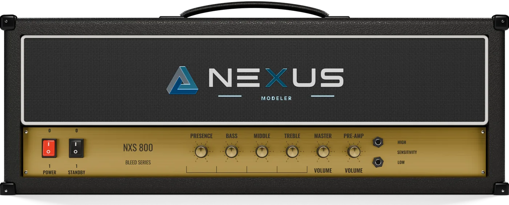
Brit 800
Inspirado no cabeçote britânico de rock dos anos 80, de um canal e ganho alto. O ganho troca as capturas; grave, médio, agudo e presença seguem o circuito de tonalidade britânico.
Inspired by the classic 1980s British rock head, single channel and high gain. Gain swaps captures; bass, middle, treble and presence follow the British tone circuit.
CanaisChannels1, como o original1, like the original
CapturasCapturesUma por posição do ganhoOne per gain position
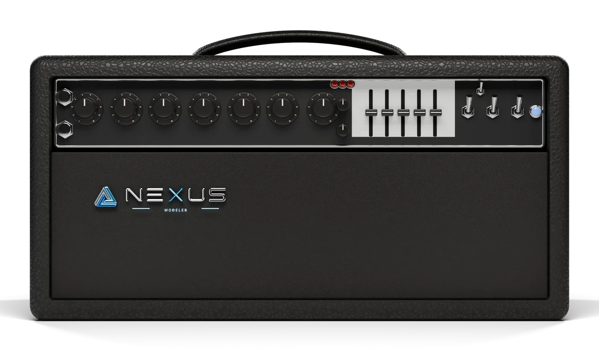
Mark Three
Inspirado no Mark III: três canais (Limpo, Crunch e Solo), cada um com a sua captura, e equalizador gráfico de cinco faixas.
Inspired by the Mark III: three channels (Clean, Crunch and Lead), each with its own capture, and a five-band graphic EQ.
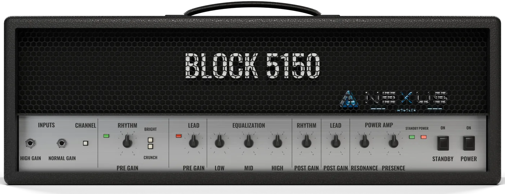
Block 5150
Inspirado no 5150: o alto ganho que definiu o metal dos anos 90. Canais Ritmo e Solo.
Inspired by the 5150: the high gain that defined 90s metal. Rhythm and Lead channels.
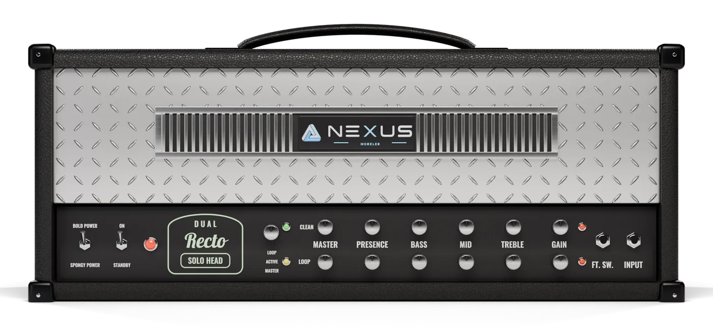
Recto Dual
Inspirado no Dual Rectifier: o grave enorme do metal moderno, com ganho de 1 a 9.
Inspired by the Dual Rectifier: the huge low end of modern metal, gain from 1 to 9.
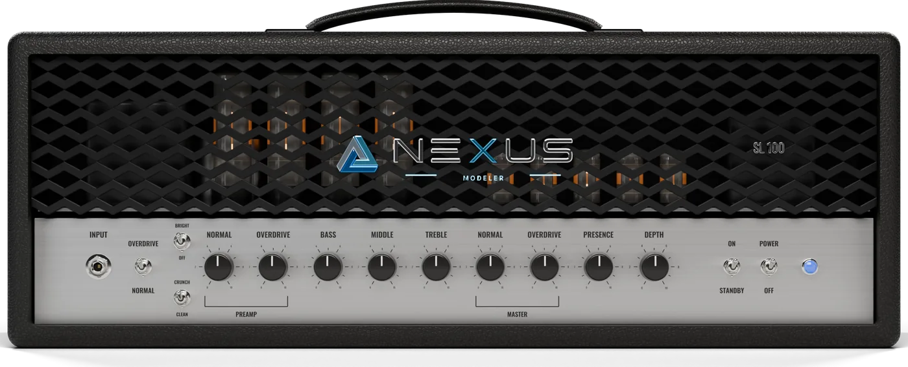
SL 100
Inspirado no SLO-100: o solo cantado do rock de alto ganho. Canais Normal e Overdrive.
Inspired by the SLO-100: the singing lead of high-gain rock. Normal and Overdrive channels.
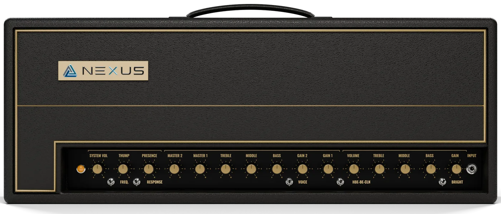
BE 100
Inspirado no BE-100: o britânico turbinado, com ganho de 1 a 9.
Inspired by the BE-100: the hot-rodded British voice, gain from 1 to 9.
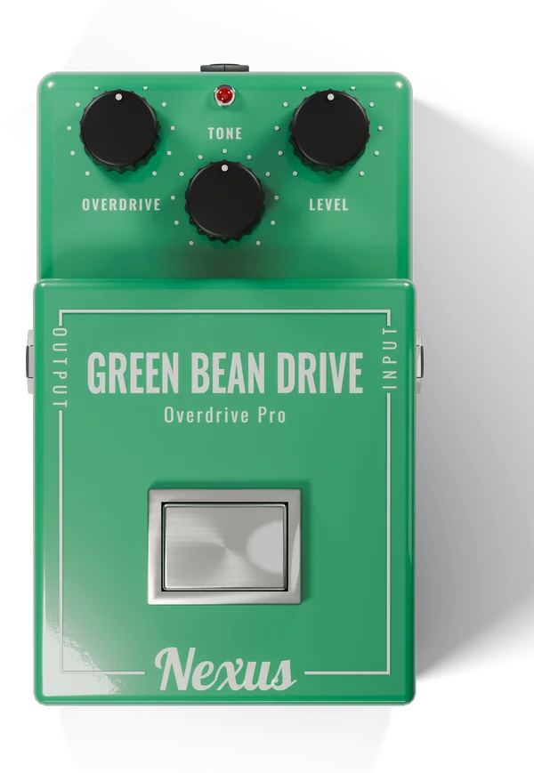
Green Bean Drive
Overdrive verde, inspirado no Tube Screamer: o clássico que empurra o amplificador.
Green overdrive, inspired by the Tube Screamer: the classic amp pusher.
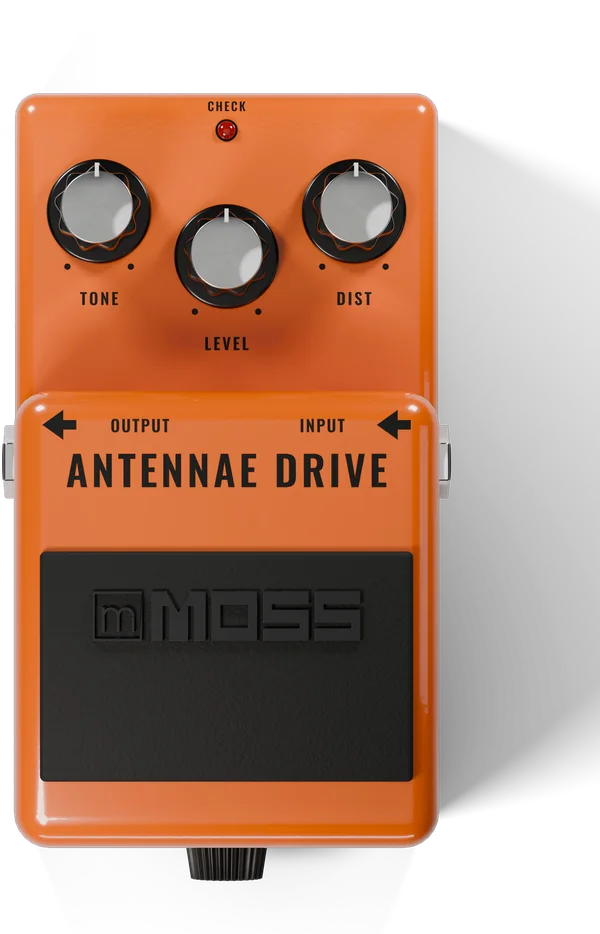
Antennae Drive
Distorção compacta, inspirada na DS-1, a mais famosa das distorções de pedal.
Compact distortion, inspired by the DS-1, the most famous stompbox distortion of all.
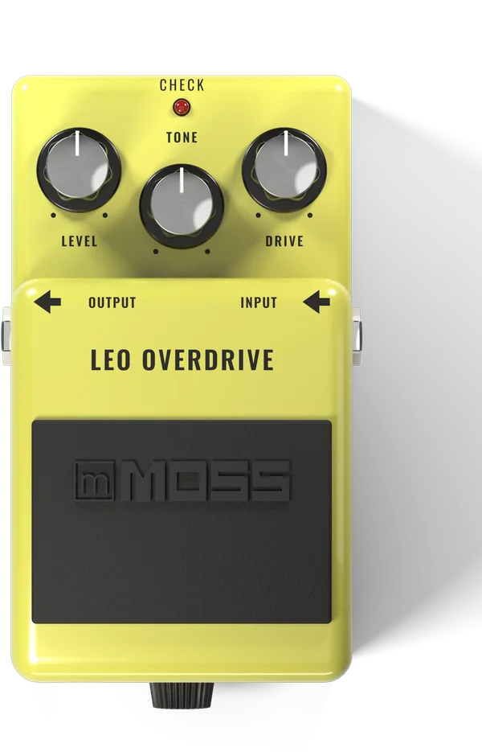
Leo Overdrive
Overdrive compacto, inspirado no SD-1, de som médio e cheio.
Compact overdrive, inspired by the SD-1, with a full, mid-rich voice.
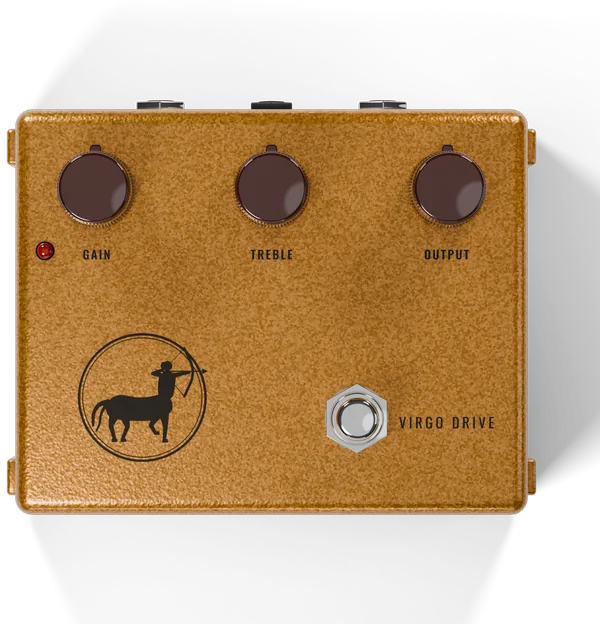
Virgo Drive
Overdrive inspirado no Klon Centaur, o pedal mais cobiçado e transparente da história.
Overdrive inspired by the Klon Centaur, the most sought-after transparent pedal in history.
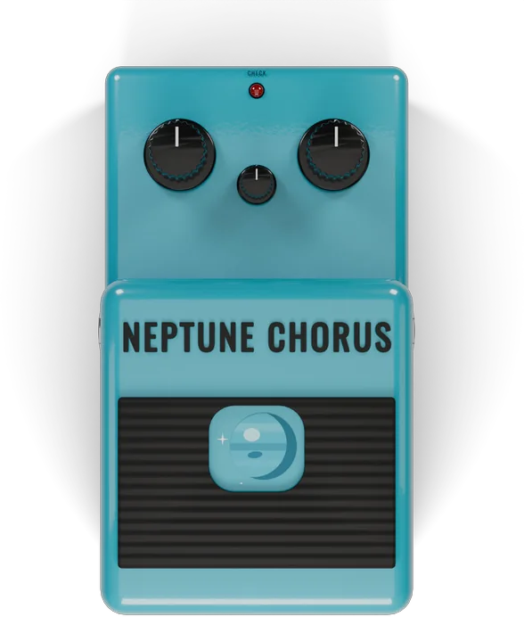
Agave Chorus
Chorus inspirado no CE-2, que deixa o som largo e brilhante. Efeito do próprio Nexus, sem captura.
Chorus inspired by the CE-2, which makes the sound wide and shimmering. Built into Nexus, no capture needed.
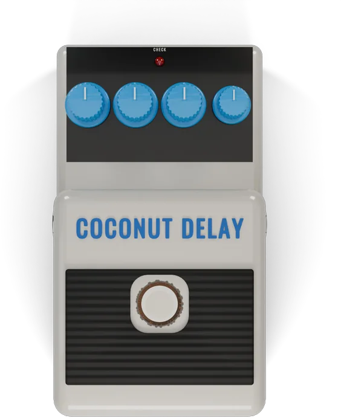
Birch Delay
Delay inspirado no DD-3. Ao desligar, as repetições terminam naturalmente. Efeito do próprio Nexus, sem captura.
Delay inspired by the DD-3. Switch it off and the repeats fade out naturally. Built into Nexus, no capture needed.
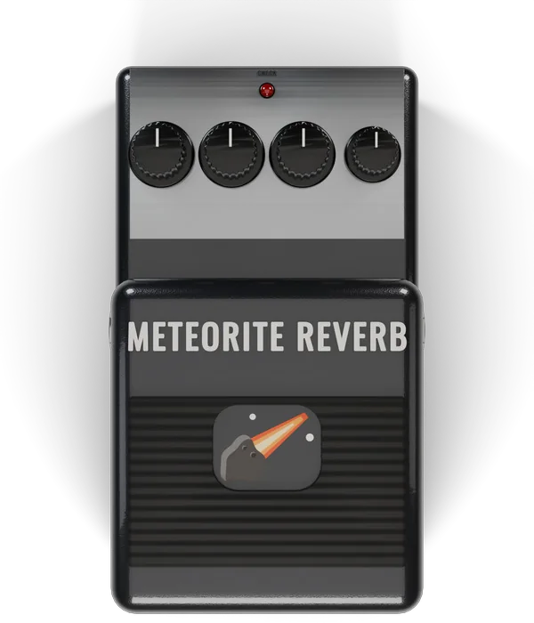
Juniper Reverb
Reverb inspirado no RV-6, de uma sala pequena a um salão enorme. Efeito do próprio Nexus, sem captura.
Reverb inspired by the RV-6, from a small room to a huge hall. Built into Nexus, no capture needed.
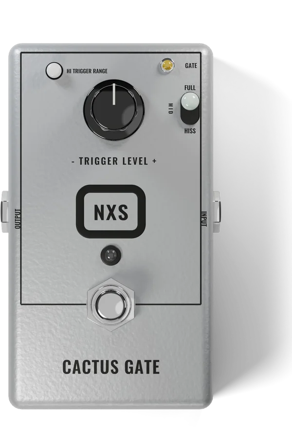
Cactus Gate
Redutor de ruído inspirado no Smart Gate: corta o chiado nas pausas sem mexer nas notas.
Noise gate inspired by the Smart Gate: cuts hiss between notes without touching them.
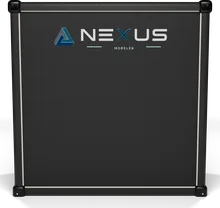
Oitenta e duas caixasEighty-two cabinets
Cada cabeçote abre com a sua caixa, e dá para trocar na lista.
Each head opens with its own cabinet, and you can swap it from the list.
De 2x12 a 8x10, cada uma no estilo da original. Toque com a resposta de caixa que quiser (um arquivo .wav que guarda o som de uma caixa, chamado de IR). Se a captura já inclui a caixa (o chamado full rig), o Nexus percebe e trava a caixa sozinho, para não colorir o som duas vezes.
From 2x12 to 8x10, each in the style of the original. Play it with any cabinet response you like (a .wav file that stores how a cabinet sounds, called an IR). If the capture already includes the cabinet (a full rig capture), Nexus notices and locks the cabinet on its own, so the sound isn't colored twice.
Galeria de equipamentosGear gallery
Toque em uma peça para ver a foto grande; as setas passam para a próxima. Ao escolher uma peça, o Nexus baixa sozinho a captura mais curtida pela comunidade da TONE3000, e cada cabeçote entra com a caixa feita para ele.
Tap a piece to see the large photo; the arrows move to the next one. Pick a piece and Nexus downloads the community's most-liked TONE3000 capture on its own, and each head comes with the cabinet made for it.
Cabeçotes de guitarraGuitar heads64
Cabeçotes de baixoBass heads4
CaixasCabinets82
PedaisPedals78
Os equipamentos do Nexus são criações próprias, inspiradas em clássicos. O nome do aparelho original aparece só para indicar a inspiração; as marcas pertencem aos seus donos, que não têm ligação com o Nexus.
Nexus gear is original work inspired by classics. The original device's name appears only to show the inspiration; trademarks belong to their owners, who are not affiliated with Nexus.
Cadeia de sinalSignal chain
Monte a pedaleira com o mouseBuild your rig with the mouse
O caminho do sinal fica no rodapé da tela. Clique em “+” para pôr um pedal e arraste para mudar a ordem.
The signal path sits at the bottom of the screen. Click “+” to add a pedal and drag to reorder.
Até 12 pedais, antes do cabeçote, entre o cabeçote e a caixa (para modulação, por exemplo) ou depois da caixa.
Up to 12 pedals, before the amp, between the amp and the cabinet (for modulation, say) or after the cabinet.
Dois cabeçotes com pedal A/B: cada lado tem cabeçote, pedais e caixa próprios. A troca de lado é suave, sem estalo.
Two amps with an A/B switch: each side has its own amp, pedals and cabinet. Switching sides is smooth, with no pop.
Até 3 canais por cabeçote, como no amplificador original, cada um com o próprio pacote de capturas.
Up to 3 channels per amp, like the original, each with its own capture pack.
Tudo salvo no projeto do seu programa de gravação.
Everything is saved with your recording project.
Fonte das capturasWhere captures come from
Capturas da TONE3000, dentro do programaTONE3000 captures, right inside the app
A TONE3000 é a maior biblioteca aberta de capturas, feitas por guitarristas e técnicos do mundo todo. Clique em “abrir pacote” embaixo do nome do equipamento e o Nexus mostra:
TONE3000 is the largest open library of captures, made by guitarists and engineers around the world. Click “open pack” under the gear's name and Nexus shows:
Recomendadas para aquele equipamento, escolhidas para ter uma captura por posição do botão;
Recommended packs for that gear, picked to have one capture per knob position;
Seus favoritos e downloads da sua conta, filtrados pelo equipamento;
Your favorites and downloads from your account, filtered by the gear;
Em alta e o catálogo completo;
Trending and the full catalog;
Inserir manualmente, para abrir uma pasta do seu computador.
Add manually, to open a folder on your computer.
O Nexus baixa só as capturas certas, uma por posição do botão, e monta o pacote sozinho.
Nexus downloads only the right captures, one per knob position, and builds the pack for you.
Crédito sempre à vista. A TONE3000 aparece como fonte em toda a janela, e cada captura mostra o nome de quem a criou. As capturas pertencem aos seus criadores.
Credit always in view. TONE3000 is shown as the source across the whole window, and every capture shows its creator's name. Captures belong to their creators.
EstúdioStudio
Tire a guitarra da música e toque no lugarTake the guitar out of the song and play its part
Importe uma música (MP3, WAV, FLAC ou M4A) e o Nexus separa no seu próprio computador seis faixas: voz, guitarra, baixo, bateria, piano e o resto. A sua guitarra passa pela cadeia e se mistura com a música.
Import a song (MP3, WAV, FLAC or M4A) and Nexus splits it, on your own computer, into six tracks: vocals, guitar, bass, drums, piano and the rest. Your guitar runs through the chain and blends with the song.
Volume, mudo e solo em cada faixa, com medidor;
Volume, mute and solo on every track, with a meter;
Velocidade de 50 a 100% sem mudar o tom, e tom de −6 a +6 sem mudar a velocidade;
Speed from 50 to 100% without changing pitch, and pitch from −6 to +6 without changing speed;
Repetir A–B: arraste na forma da música para ensaiar só o trecho difícil;
A–B loop: drag across the waveform to rehearse just the hard part;
Playlists que tocam uma música atrás da outra, para o ensaio inteiro.
Playlists that play one song after another, for the whole rehearsal.
Separação no seu computador. Usa o Demucs de 6 faixas (Meta, licença MIT); o modelo de 55 MB é baixado só na primeira vez, e a mesma música nunca é separada duas vezes.
Separation on your computer. It uses 6-track Demucs (Meta, MIT license); the 55 MB model is downloaded only the first time, and the same song is never separated twice.
RecursosFeatures
Feito para tocar, gravar e ensaiarMade to play, record and rehearse
Nexus Modeling EngineNexus Modeling Engine
Modelagem própria do Nexus para cabeçotes e pedais, em desenvolvimento, com base na pesquisa aberta sobre redes neurais para áudio. Vai ser o padrão, com o ganho girando de forma contínua, e as capturas NAM da TONE3000 continuam como opção em cada peça.
Nexus's own modeling for amp heads and pedals, in development, built on open research into neural networks for audio. It will be the default, with a smoothly turning gain knob, and NAM captures from TONE3000 stay available as an option on every piece.
Nexus InsideNexus Inside
Firmware próprio da família Nexus para pedaleiras multiefeitos, em desenvolvimento num projeto separado. Com o editor próprio, o Nexus Inside Editor, presets, capturas e IRs vão do computador para a pedaleira.
Nexus's own firmware for multi-effects pedalboards, in development as a separate project. With its own editor, Nexus Inside Editor, presets, captures and IRs go from the computer to the pedalboard.
Afinador de rackRack tuner
Fixo no começo da cadeia: nota, cents e fileira de luzes, lá de 430 a 450 Hz e mudo ao afinar.
Fixed at the start of the chain: note, cents and an LED strip, A from 430 to 450 Hz and mute while tuning.
Tap tempoTap tempo
Modulações e delay no andamento da música: 1/4, 1/8, 1/8 pontuada, tercinas. Toque na tela ou numa pedaleira MIDI.
Modulation and delay locked to the song's tempo: 1/4, 1/8, dotted 1/8, triplets. Tap on screen or on a MIDI footswitch.
A captura mais curtidaThe most-liked capture
Escolheu a peça, a captura preferida da comunidade da TONE3000 entra sozinha, e cada cabeçote vem com a sua caixa.
Pick a piece and the TONE3000 community's favorite capture loads on its own; each head comes with its own cabinet.
Troca sem cliqueClick-free swaps
Gire o ganho de 0 a 10 em degraus, ou de forma contínua misturando as capturas vizinhas.
Turn gain from 0 to 10 in steps, or continuously by blending neighboring captures.
Equalizador de 24 faixas24-band equalizer
Fixo no fim da cadeia, com cortes, prateleiras e sinos; a curva aparece na própria cadeia.
Fixed at the end of the chain, with cuts, shelves and bells; the curve shows right in the chain.
Até 12 pedaisUp to 12 pedals
Cada pedal toca capturas de pedal, com drive em degraus, tom e nível. O pisante liga e desliga sem estalo.
Each pedal plays pedal captures, with stepped drive, tone and level. The footswitch toggles with no pop.
Dois cabeçotes A/BDual amps A/B
Dois equipamentos completos lado a lado, trocados por um pedal A/B.
Two complete rigs side by side, switched with an A/B pedal.
Caixa com IR da TONE3000Cabinet IRs from TONE3000
IRs recomendados da TONE3000 ou do seu computador; troque de microfone na própria caixa. Capturas com caixa inclusa travam a caixa sozinhas.
Recommended IRs from TONE3000 or from your computer; switch microphones on the cabinet itself. Captures that already include a cab lock it automatically.
A2 Full e A2 Lite
O mesmo arquivo serve nos dois modos: o mais fiel ou o mais leve para o processador.
The same file works in both modes: the most faithful, or the lightest on your processor.
Baixa latênciaLow latency
O programa independente fala direto com a interface de áudio (ASIO no Windows, Core Audio no Mac, JACK no Linux) para o atraso entre tocar e ouvir ser mínimo.
The standalone app talks straight to your audio interface (ASIO on Windows, Core Audio on Mac, JACK on Linux) so the delay between playing and hearing stays minimal.
MIDI por USB e BluetoothMIDI over USB and Bluetooth
Use sua pedaleira controladora: troque de canal pelo patch e ligue qualquer botão a um controle com “Aprender MIDI”.
Use your foot controller: switch channels with program changes and map any knob with “MIDI Learn”.
Testar o somTest the sound
Uma guitarra gravada limpa toca pela cadeia inteira, em Limpo, Blues, Rock ou Pesado, sem você precisar tocar. Ou grave 15 s da sua guitarra.
A clean recorded guitar plays through the whole chain, in Clean, Blues, Rock or Heavy styles, with no playing needed. Or record 15 s of your own guitar.
Capturas prontas na mãoCaptures ready in hand
Ao pegar o drive ou o ganho, as capturas vizinhas já aquecem antes do giro: a troca de distorção entra sem espera e sem engasgo.
When you grab drive or gain, the neighboring captures warm up before you turn it: gain changes land with no wait and no hiccup.
Captura padrãoDefault captures
Escolheu um pedal ou um cabeçote? Com a conta da TONE3000 conectada, o Nexus baixa e carrega a captura recomendada sozinho. Quer outra? Troque pelo pacote.
Picked a pedal or a head? With your TONE3000 account connected, Nexus downloads and loads the recommended capture on its own. Want another? Swap the pack.
Relatório de problemasProblem reports
Algo deu errado? O Nexus abre uma issue no GitHub já preenchida com a versão, o sistema e os últimos erros, sem dados pessoais.
Something went wrong? Nexus opens a GitHub issue already filled in with the version, system and latest errors, with no personal data.
Qualquer taxa de amostragemAny sample rate
Seu projeto em 44,1, 48 ou 96 kHz (a “resolução” do áudio no tempo)? O Nexus converte sozinho.
Project at 44.1, 48 or 96 kHz (the audio's time resolution)? Nexus converts on its own.
30 mspara trocar de captura, sem cliqueto swap captures, with no click
6,5 msde ida e volta numa interface USB comum, medidos num Macround trip on an ordinary USB interface, measured on a Mac
1,4 %de um núcleo do processador por captura A2 Liteof one processor core per A2 Lite capture
15idiomas na telainterface languages
Fala a sua línguaSpeaks your language
O globo na barra de cima troca o idioma; na primeira vez, vale o do sistema. Os nomes dos botões são traduzidos por cima da imagem 3D.
The globe in the top bar switches language; the first time, it follows your system. Knob names are translated on top of the 3D image.
Português
English
Español
Français
Italiano
Deutsch
日本語
中文
한국어
हिन्दी
العربية
বাংলা
Русский
Bahasa Indonesia
Türkçe
BaixarDownload
Grátis. Para sempre.Free. Forever.
O instalador traz sempre a versão mais recente. Depois disso, o Nexus avisa e se atualiza sozinho.
The installer always brings the latest version. After that, Nexus tells you and updates itself.
Alpha 1.0. O Nexus está em testes abertos: baixe, toque e, se algo der errado, use “Relatar problema” no próprio programa. No Mac, o instalador ainda não é assinado pela Apple: na primeira vez, clique com o botão direito no Nexus e escolha “Abrir”. No Windows, se aparecer o aviso azul, clique em “Mais informações” e “Executar assim mesmo”.
Alpha 1.0. Nexus is in open testing: download, play and, if something goes wrong, use “Report a problem” in the app. On Mac the installer isn't signed by Apple yet: the first time, right-click Nexus and choose “Open”. On Windows, if the blue warning shows up, click “More info” and “Run anyway”.
macOS
macOS 11 ou mais novo, Intel e Apple SiliconmacOS 11 or newer, Intel and Apple Silicon
VST3 e programa independente · ASIO, WASAPI, DirectSound · MIDI por USB e BluetoothVST3 and standalone · ASIO, WASAPI, DirectSound · MIDI over USB and Bluetooth
Linux
Debian, Ubuntu, Mint e derivadosDebian, Ubuntu, Mint and derivatives